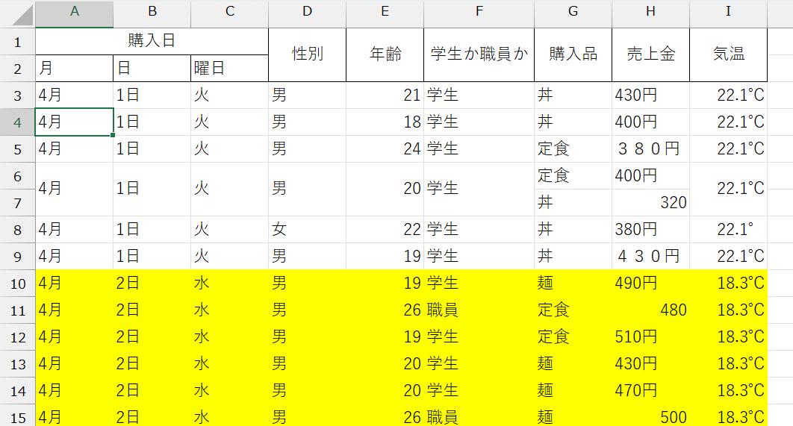
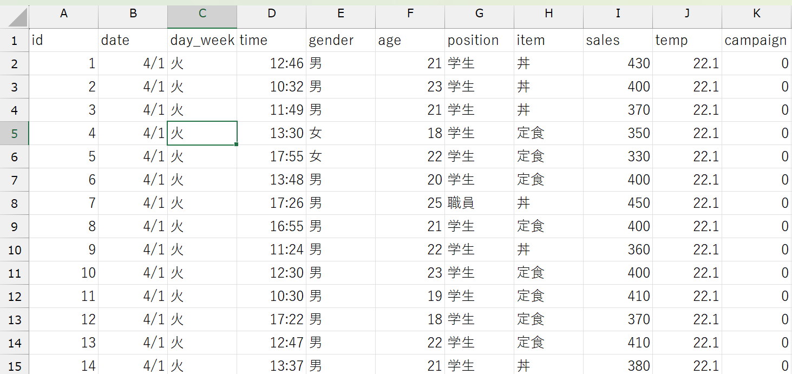

はじめに
最終更新日：2026年3月3日
この文書は、Excelを用いてデータ実証を行う方法をまとめたものです。和歌山大学経済学部の統計学入門を履修した学生を対象にしていますが、基礎的な統計学の知識があれば、履修していない方でも理解できる内容です。
分析には、ExcelやGoogle Sheetsなどの表計算ソフトを使うことを想定します。ですが、具体的な関数の話以外は、他の統計ソフトを使う際にも適用できるものです。まずは実際に手元のデータで何ができるかを知りたいという方へのヒントにもなると思います。
「実際に起こりうるシチュエーションにおいて、どのようにデータを活用するか」を主眼に置いているため、厳密さより分かりやすさを優先した記述があります。ご了承ください。
学習内容について
具体的には、以下の内容を学習します。
- 記述統計と推測統計の違いを理解する
- 記述統計の基礎的な手法を身に着ける
- 手元のデータを適切に加工し、表やグラフを作成する
- 統計量（特に平均、分散と標準偏差、共分散と相関係数）を計算し、データの特徴を理解する
- 推測統計の基礎的な手法を身に着ける
- 仮説検定の手順を身に着ける
- 回帰分析を行う
- 因果推論について知る
データの種類と構造について
まずは、データにはどのような種類のものがあるのか、正しいデータの構造とは何か、について学んでいきます。
データの種類によって適切な分析手法が異なるため、手元のデータがどのような特性を持つデータなのかを理解することは大切です。
また、分析にすぐ使える状態に整備された「整然データ（綺麗なデータ）」と、欠損・表記ゆれ・構造の乱れなどを含む「雑然データ（汚いデータ）」というものが存在します。自分自身でデータをとる際には整然データの状態で管理することが大切ですし、時には、取得した雑然データを整然データに加工する前処理と呼ばれる作業も必要になります。 加工しやすい「整然データ」はどのような構造を取るべきかについて解説します。
データの種類
データは、データのとり方とデータをとる対象によって、いくつかの種類に分けることができます。
個人情報か集計情報か
データが含む情報の性質により、データは2種類に分けられます。
マイクロデータ（個票データ）
個人の情報を集めたデータのことです。
（例）クラス40人それぞれのテストの点数、東京都に住んでいる1000人それぞれの家計得、東京証券取引所に上場している企業それぞれの売上金額など
マクロデータ（集計データ）
個別の情報を集計したもので、特定のグループを対象にしたデータです。
（例）クラスの平均点、国のGDPや失業率など
時間の情報を含むか含まないか
クロスセクション・データ
1時点において複数の対象の情報を横断的に集めたデータのことです。
（例）1回分の算数のテストの点数、2024年における世界各国の平均家計所得など
時系列データ
1つの対象についての時間を通じた変化を記録したデータのことです。
（例）日経平均株価、日本円の対ドル為替レートなど
パネルデータ
複数の対象の時間を通じた変化を記録したデータのことです。
（例）40人の生徒の小1～小6までの算数のテストの点数など
それぞれの性質の組み合わせによって、「クロスセクションのマクロデータ」、「個票のパネルデータ」、「マクロの時系列データ」などが存在します。
手元のデータは誰を（何を）対象に取られたものなのか、同じ対象について1回のみ取られたデータなのか、それとも同じ対象について複数回取られたデータなのかに注目して、適切に分類できるようになりましょう。
データの構造
データには、分析しやすい正しい構造というものが存在します。取得したデータが正しい構造になっていないときには、分析前に正しい構造に加工する作業が必要になります。
まずは、目指すべき構造を学びましょう。また、自分でデータを取る際には、正しい構造で管理するようにしましょう。
「雑然データ（汚いデータ）」の例
「雑然データ」とは、例えば以下のようなものです。

ポイント
- セルが結合されている
- 1つの対象について、複数行のデータが存在する
- 対象を一意に特定するための項目が足りていない
- 表記がゆれている
- 特に、半角と全角が混同していると分析の支障になる
- 同じように見える記号でも、Unicode（文字コード）が異なれば別の文字として認識されてしまうので注意
- データとしてほしい情報以外の情報が存在する
- 数値セル内に単位が記入されている、特定の文字やセルに装飾がされている、コメントが挿入されているなど
こういったデータは、分析がしづらいだけでなく、エラーの原因にもなります。
取得したデータがこのような「雑然データ」なら、まずは以下に示すような「整然データ」に直す前処理の工程が必要です（ちなみに、この前処理が1番時間がかかることが多いです）。
雑然データにならないようにするために
そもそも、自分で一からデータをとる際には、最初から「整然データ」になるように工夫が必要です。具体的には、以下のような方法でデータをとりましょう。
- Google FormsやMicrosoft Formsなどの、フォームを利用してデータをとる
- 機密情報が含まれるなど、必要な場合には専門業者に委託する
- 表記がゆれそうな項目はプルダウンなどの選択式にする
- データは、Excel形式（
.xlsx）ではなく、CSV形式（.csv）で保存する
ご覧いただいて分かる通り、そもそもExcel入力でデータを取らないことが解決策です。
まずは表記ゆれが出ない形式でフォームを作成し、フォームで回答されたものをCSVファイルでダウンロードすることで、一発で「整然データ」を手に入れることができます。
なぜExcelではなくCSVで保存する必要があるのか、というと、生データの保全のためです。例えば、シートを追加する、文字を装飾する、セルを装飾する、セルを結合する、等々…。こういった操作はCSVでは保存できません（保存する際にアラートが出ると思います）。言ってしまえばCSVだと余計な操作ができず、だからこそ生データをそのまま保全できるのです。
生のデータから表やグラフを作成したり、統計量を計算したりするなど、データを加工する際には、生のデータを複製しExcelファイルに変換した分析用ファイルで行うか、ブックリンクを作成するかしましょう。
以降、データは.csv 形式で保存されていると想定します。
正しいデータの構造
「整然データ」は以下のような構造です。

ポイント
- 1番上の行に変数名が入っている
- 1番左の列はデータ識別番号（ID変数）になっている
- 表記ゆれがない
- 日本語は全角、英数字は半角に統一されている
- データはできるだけ数字にする
- 変数名はアルファベットで定義されている
「整然データ」の基本は、1番上の行に変数名、1番左の列にID、それぞれがクロスするセルにデータ（情報）です。それぞれのデータは表記ゆれがないようにクリーニングしておきましょう。日本語は全角で、英数字は半角で入力されている状態が基本です。
データ（情報）は、できるだけ数字で表されている状態が望ましいです。数字の方が統計量を計算したり、仮説検定や回帰分析を行ったりするときに扱いやすいからです。
カテゴリーデータを扱う場合も、できるだけ数字に変換しておきましょう。例えば、性別変数は通常「男性／女性」と日本語で表される場合が多いですが、男性を\(0\)、女性を\(1\)に対応させることで、「\(0\)／\(1\)」に変換することができます。
変数名は、できればアルファベットで定義されている状態が理想です。これは、Excelを使っている限りにおいてはさほど問題にならないかもしれませんが、他の統計ソフトを使う際に支障となる場合があります。
余談ですが、同様の理由でファイル名も日本語を使わずアルファベット表記にする方が望ましいです。
ここで使用するデータについて
次の章から、実際にデータ分析を行っていきます。
今後扱うデータは、学食の売り上げデータを想定して作成したデータです。
みなさんは、このデータを使って「学食の売上向上プロジェクト」を進めていきます。このようなシチュエーションにおけるデータ活用方法を学びながら、基礎的な統計分析の手法を身につけましょう。
データは以下のリンクからダウンロードしてください。
ダウンロードしたファイルをExcelで開くと、以下のような画面が見れると思います。
このデータは「整然データ」になっているので、1番上の行に変数名、1番左の列（A列）にIDが入っています。
以下の表で、各変数の説明をしています。
| 変数名 | 説明 | 値の範囲 |
|---|---|---|
| id | 売上ID、各売上ごとにユニークな識別番号 | 1~512 |
| date | 日付 | 2025/4/1~2025/4/17 |
| day_week | 曜日 | 日、月、火、水、木、金、土 |
| gender | 性別 | 男、女 |
| age | 年齢（歳） | 18~ |
| position | 職位 | 学生、職員 |
| item | 商品名 | 麺、丼、定食 |
| sales | 売上金額（円） | |
| temp | 気温（℃） | |
| campaign | キャンペーン | 0, 1 |
以降の章では、このデータを使いながら、統計分析を行っていきます。
用語解説
以降の章で頻出する用語について解説します。
| 用語 | 意味 | 備考 |
|---|---|---|
| 変数 | 調査項目 | （例）身長 |
| 観測値 | 調査の結果 | （例）回答者それぞれの身長 Aさん: \(160cm\)、Bさん: \(172cm\)、・・・ |
| 母集団 | 調査や分析の対象となる全体の集まり | （例）全国の大学生の平均身長を調べる場合→母集団は「全国のすべての大学生」 |
| データ（標本） | 観測値の集まり | （例）全回答者の身長 \(\{160cm, 172cm, 158cm, …\}\) ※「個々の観測値」と「データ（観測値の集まり）」は区別する |
| データサイズ（サンプルサイズ） | データに含まれる観測値の個数 | （例）回答者の数 |
| データ数（サンプル数） | データの個数 | （例）1つの大学を対象に4月と10月の2回調査を行ったとき→データ数は2 ※観測値の集まりであるデータの個数であり、1つのデータに含まれるサンプルの数とは別なので注意 |
| 量的データ | 数字で表されるデータ | 数字の大小に意味があり、足し算や引き算をした値にも意味を持つデータのこと （例）気温、売上金額、人口など |
| カテゴリデータ | 数字で表されないデータ | 足し算や引き算をした値に意味を持たないデータのこと データに順序があるものとないものがある （例）血液型、出身地、満足度など |